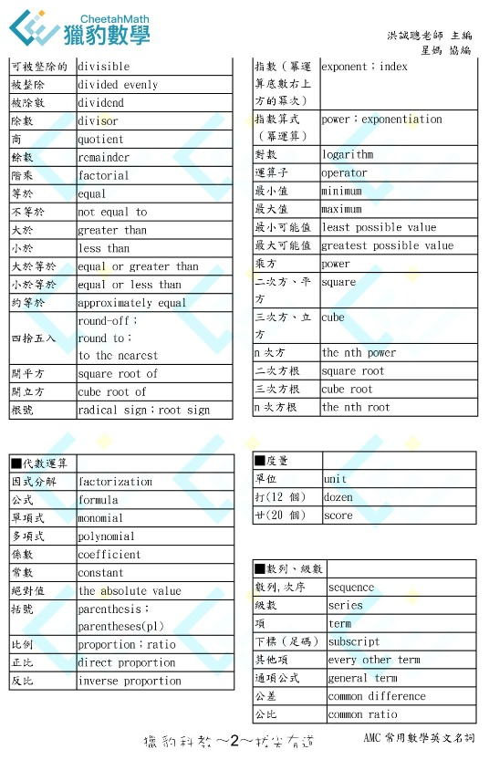
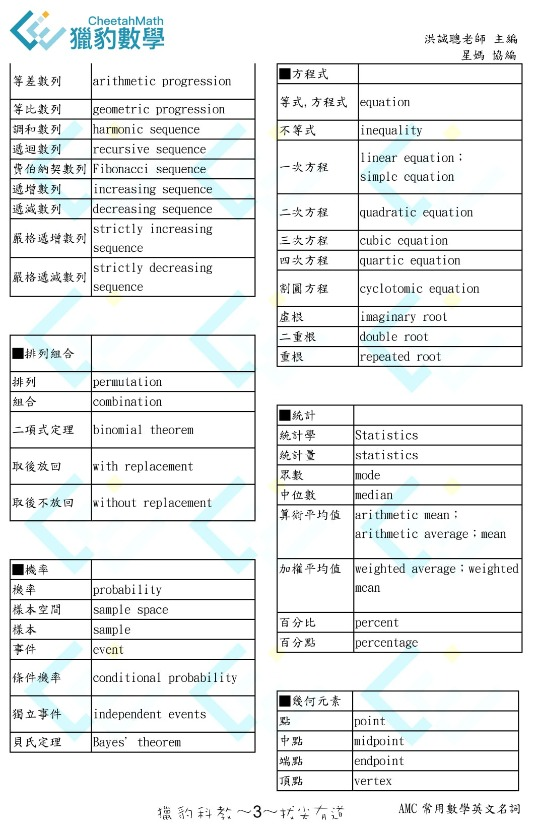
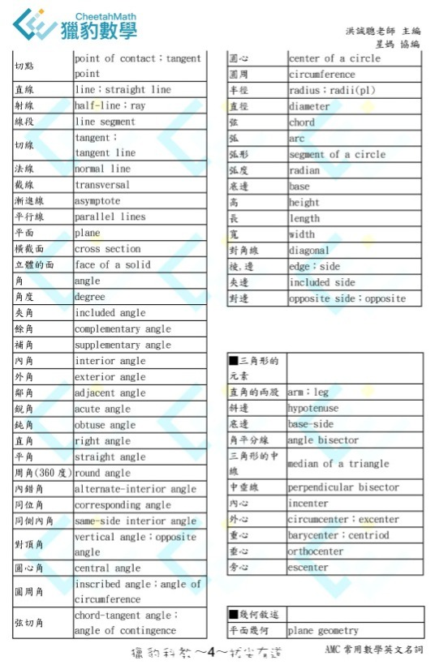
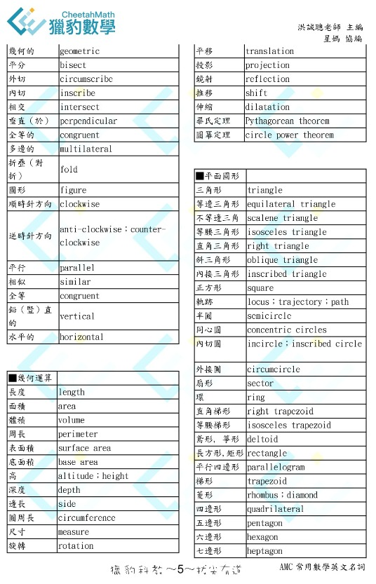
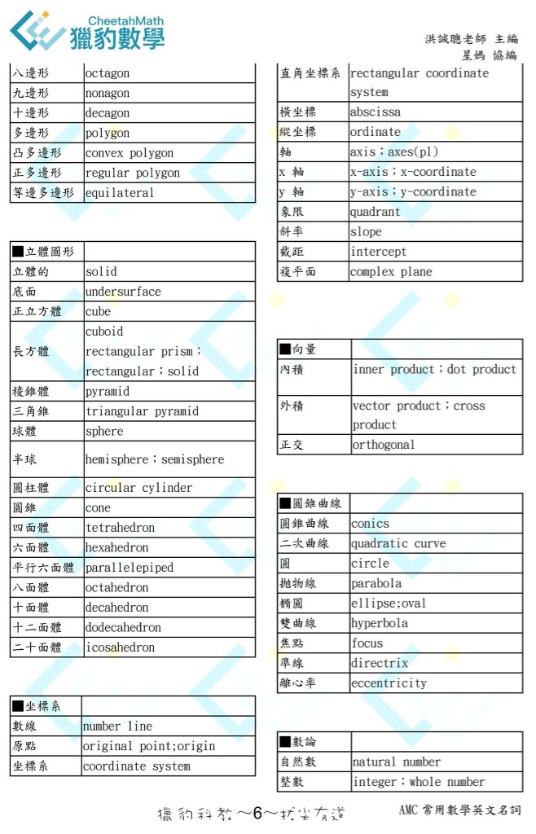
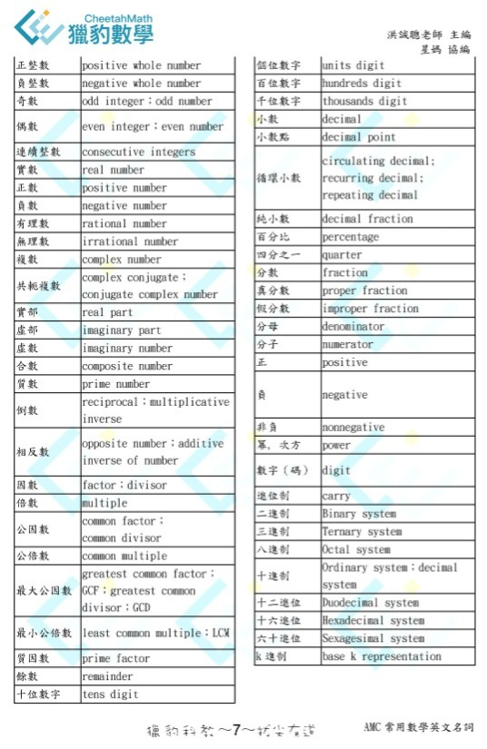

獵豹的 AMC常用數學英文名詞
即將在11月舉辦的AMC10、12（美國數學競賽）是每年許多中學數理資優生熱衷參與的活動。
而108課綱上路後，它更成為數學學習歷程的熱門項目！
尤其如果想申請美國頂尖名校STEM科系的同學，AMC、AIME的成績更是重中之重！
（獵豹多位海內外申請到頂尖學校：MIT、Stanford、Princeton、CMU（CS）…的同學，都獲得非常亮麗的成績！）
昨天我的文章中提到獵豹老師鼓勵同學們多練習看英文題目（「立足台灣 胸懷天下」https://www.facebook.com/groups/695697124716309/permalink/884549535831066/）
洪誠聰老師非常熱心地提供同學們他辛苦整理的「AMC常用數學英文名詞」（如附圖），讓初學者可以很方便的入手，希望同學們不要辜負了老師的一番心意！
如果需要索取這資料的PDF檔及日後更多的更新資料，請 私訊星媽孩子的姓名、學校、年級+要索取獵豹的 AMC常用數學英文名詞。
https://www.facebook.com/groups/695697124716309/permalink/885205875765432/






